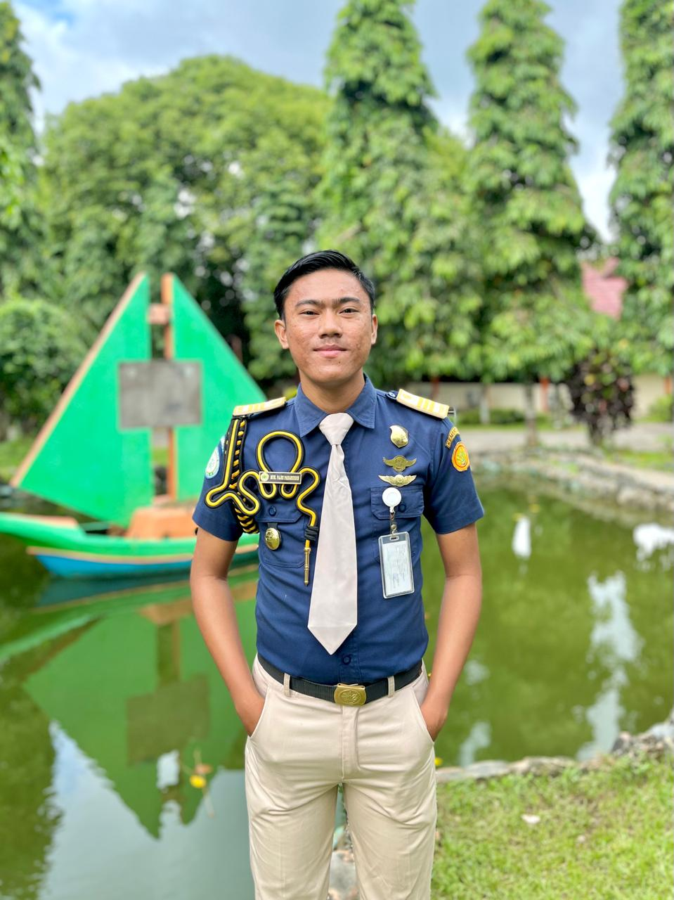

Calon penyuluh pertanian yang berfokus pada pengembangan pertanian berkelanjutan, pemberdayaan petani, dan inovasi teknologi untuk mendukung ketahanan pangan nasional.
Lihat Profil
Sebagai calon penyuluh pertanian berkelanjutan, saya percaya bahwa masa depan pangan terletak pada keseimbangan antara produktivitas dan kelestarian lingkungan.
Melalui pengalaman Praktik Kerja Lapangan (PKL) serta keterlibatan aktif dalam organisasi kemahasiswaan, saya telah mengembangkan kemampuan komunikasi, penyusunan materi penyuluhan, dan pendampingan kelompok tani.
fajripaharuddin@gmail.com
0821-9467-1167
@mhmfajrii